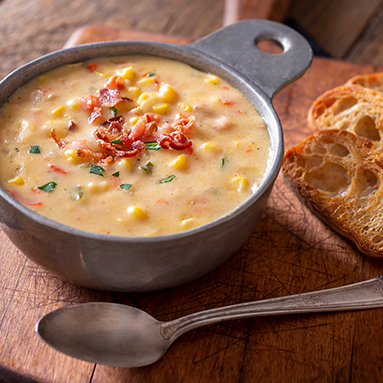

Creme de galinha
Informações
- Dona Benta
- Produtos
- Receitas
- Livro
- Notícias
- Contato
Creme de galinha

Ingredientes
- 1 kg de peito (grande)
- 2 litros de água
- 1 lata de creme de leite
- 1 lata de milho verde
- 1 copo de azeitona
- Folha de louro
- 1 e ½ xícaras de Farinha de Trigo Dona Benta Tradicional
- 3 litros de leite
- Verduras e temperos a gosto
- 3 colheres de sopa de manteiga
- 1 cebola cortada em 4 partes
Modo de preparo
- Cozinhe o peito de frango com a água, a folha de louro, cebola cortada em 4 partes, quando estiver pronto, desfie e reserve.
- Em uma panela adicione a manteiga, em seguida despeje a farinha
- de trigo e deixe dourar, depois.
- adicione o milho verde, a azeitona, o creme de leite.
- Deixe refogar um 1 minuto, em seguida adicione o frango e mexa
- bem, coloque o leite e ajuste o
- ponto com o caldo do frango cozido e peneirado e mexa até
- engrossar no ponto que você quiser.
- Ajuste o sal a gosto.